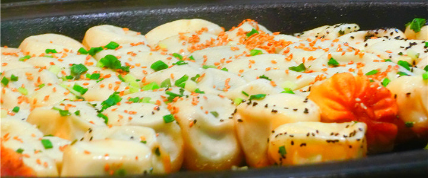
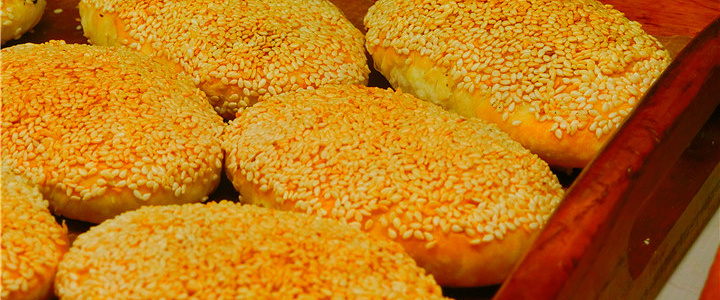
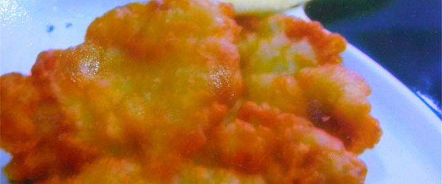
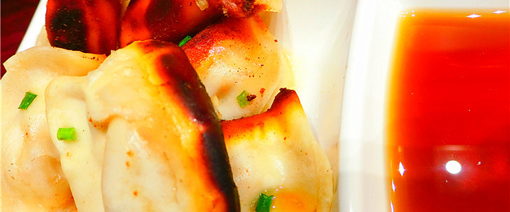
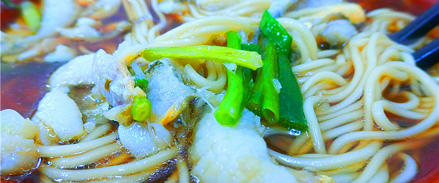

生煎

用半发酵面包馅，依次排放平底锅，通过油煎、喷水若干次即熟。形态饱满，其底部色泽亮澄，脆爽喷香，馒身松而软，肉馅鲜嫩带汤汁，一口咬下去，肉汁芝麻葱香交织，皮有脆有绵，馅亦烂亦酥，美味充盈整个口腔。一两四个，分量十足，肉嫩味鲜，让人百吃不厌，以出锅热吃为佳。
蟹壳黄

上海蟹壳黄是上海久负盛名的特色点心，创始于20世纪20年代初期，以吴苑饼家烹制的蟹壳黄最为著名。蟹壳黄的馅料有咸有甜，咸的有葱油、鲜肉、蟹粉、虾仁等，甜的有白糖、玫瑰、豆沙、枣泥等。因饼形似蟹壳，熟后色泽如蟹壳背一样深红，所以称为"蟹壳黄"。
排骨年糕

排骨年糕妙就妙在年糕与排骨的配合。排骨色泽金黄，表面脆酥，肉质鲜嫩，靠着肉汁来提味的素菜，年糕对肉汁的吸取与其他食材不同，虽然被汤汁蜜包裹，但是却不失分寸还保留着自己本身的糯香和粘韧，年糕、排骨一起加上甜面酱，浇上辣椒酱，入口糯中发香而不腻，略微甜辣，鲜嫩可口。
锅贴

锅贴形如新月，底层呈深黄色，脆酥，面皮子咬起来一点都没有沾牙的感觉，肉馅松爽多汁浑然一体，不会是汤汁泄尽后仅存孤单单一枚肉丸。同时可加碗牛肉汤或者清汤，清汤就是咖喱汤，清淡不腻。
黄鱼面

选料和处理都不错，嫩滑鲜香，面条幼细而蛮有嚼劲，汤头是酱油色，鱼片约10cm左右，嫩滑鲜美，黄鱼含有丰富的蛋白质、微量元素和维生素，对人体有很好的补益作用，对体质虚弱和中老年人来说，食用黄鱼会收到很好的食疗效果。一般上海人在阿娘面馆点上一碗黄鱼面之外都会加上一小碗的咸菜肉丝浇头。